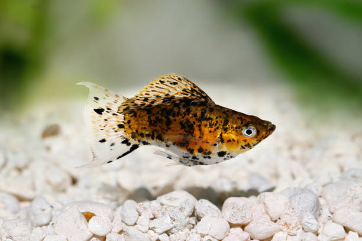

Molly balığı (Poecilia sphenops), akvaryum hobisinin en sevilen ve en dayanıklı türlerinden biridir. Orta Amerika kökenli olan bu balık, özellikle Meksika ve çevresindeki tatlı su bölgelerinde doğal olarak yaşar. Ortalama 6–10 cm uzunluğa kadar büyüyebilen mollyler, siyah, beyaz, altın ve mermer desenli olmak üzere pek çok renk varyasyonuna sahiptir. Barışçıl yapıları sayesinde sürü halinde beslenmeye uygundur ve akvaryumda diğer uyumlu türlerle kolayca birlikte yaşayabilirler. 24–28°C sıcaklık aralığında, pH 7.0–8.0 değerlerinde ve iyi filtrelenmiş sularda sağlıklı şekilde gelişirler. Omnivor beslenme yapısına sahip olan molly balıkları, bitkisel yemler, yosunlar, canlı yemler ve kaliteli kuru yemlerle beslenebilir. En dikkat çekici özelliklerinden biri canlı doğuran tür olmalarıdır; dişiler yumurta bırakmaz, doğrudan yavru dünyaya getirir ve bu nedenle akvaryumda hızlı bir şekilde çoğalırlar. Zarif görünümü, dayanıklılığı ve kolay üremesiyle molly balığı, hem yeni başlayanlar hem de deneyimli akvaryum severler için ideal bir türdür.